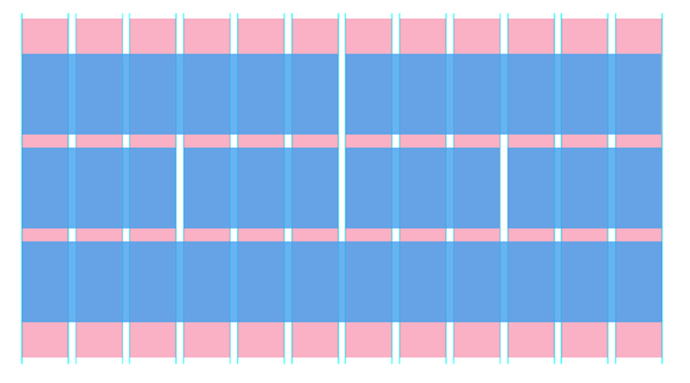

Frameworks Front-End, VALE A PENA?


Jonathan Monteiro
- Estudante 3º Ano
- Desenvolvedor Full-Stack
- Programador PHP e JAVA

jonathanvmonteiro

JohnnyMont

Johnny Monteiro
(85) 99159 - 4162
jonathandevmonteiro@gmail.com
- "Aprender para Ensinar"
Para você, o que é um framework?
Um framework em desenvolvimento de software, é uma abstração que une códigos comuns entre vários projetos de software provendo uma funcionalidade genérica.
WikipédiaNão entendi nada!
Receita de um Framework
Você pega aqueles códigos que se repetem entre os projetos
adiciona uma pitada de Padrões
deixa conforme sua equipe precisa
empacota tudo
e pronto, criou um Framework!
Resumindo
Framework é uma ferramenta que padroniza os códigos deixando-os mais fáceis de serem reutilizados
Framework é:
Características Básicas
- Deve ser Reusável
- Bem Documentado
- Fácil de Usar
- Extensível
- Completo
Front-End e Back-End

Front-End e Back-End
Front-End e Back-End
E o que é Full Stack?
E um framework Front-End?
CSS
JS
CSS e JS
JQuery
Framework
Front-End
O que é jQuery?
"Write less, do more."
Por que é tão utilizado?
- Seleção e manipulação de elementos HTML
- Eventos
Como uso?
Eventos
Framework CSS
!=
Biblioteca CSS
Modificação Visual
Classe e ID
Quantidade de código não utilizado
Personalização e criação
.fLeft {float: left}.fRight {float: right;}
Sistema X Site
Resumindo
"Cada projeto é um projeto"
Vantagens
Padronização
Velocidade de Desenvolvimento
Implementação na Equipe
Documentação
Manutenção
Comunidade
Segurança
A Responsividade
Você prefere criar 10 sites ou 1 que se adapte?
Por que se preocupar com a Responsividade?
Grid
Grid
Browsers
Então Frameworks Front-End são uma maravilha!
Desvantagens
Curva de aprendizado
Requisitos e dependências do sistema
Performance e peso
Vício
Cuidados quando for usar um framework
Domine a Linguagem
Saiba trabalhar com e sem o Framework
Estudar o framework e entender a sua essência
Alguns Frameworks:
Grid dos Frameworks
| Dispositivo | Materialize | Bootstrap | Pure | Foundation |
| Celular | .col s | .col-sm | .pure-u-sm- | .small- |
| Tablet | .col m | .col-md | .pure-u-md- | .medium- |
| Desktop | .col l | .col-lg | .pure-u-lg- | .large- |
Grid Materialize Celular
Grid Materialize Tablet
Grid Materialize Desktop
Grid Bootstrap Celular
Grid Bootstrap Tablet
Grid Bootstrap Desktop
Grid Foundation Celular
Grid Foundation Tablet
Grid Foundation Desktop
Grid Pure
Grid Pure Celular
Grid Pure Tablet
Grid Pure Desktop
Perguntas?